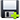
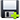

Saving results
With the Cell Analyzer it is possible to save different types of data acquired during processing. All the extracted
cell features could be saved separately for each image by clicking the Save results button ( ).
It is also could be done by choosing the Save output as option in the File menu.
If it is necessary to save calculated features for all images in the project at ones the Save all results button
() should be clicked, or the option Save all output to from the File should be selected.
).
It is also could be done by choosing the Save output as option in the File menu.
If it is necessary to save calculated features for all images in the project at ones the Save all results button
() should be clicked, or the option Save all output to from the File should be selected.
The Cell Analyzer also gives an ability to save images with detected cells and samples. By clicking the File menu option and choosing
one from the followin:
- Export image with bounding boxes will save an image with bounding boxes around all detected cells
- Export image with samples will save image with bounding boxes around all detected cells and also detected samples
- Export image with colored cells will save an image where different cells colored with different colors
- Export length frequency chart will export length frequency chart as an image